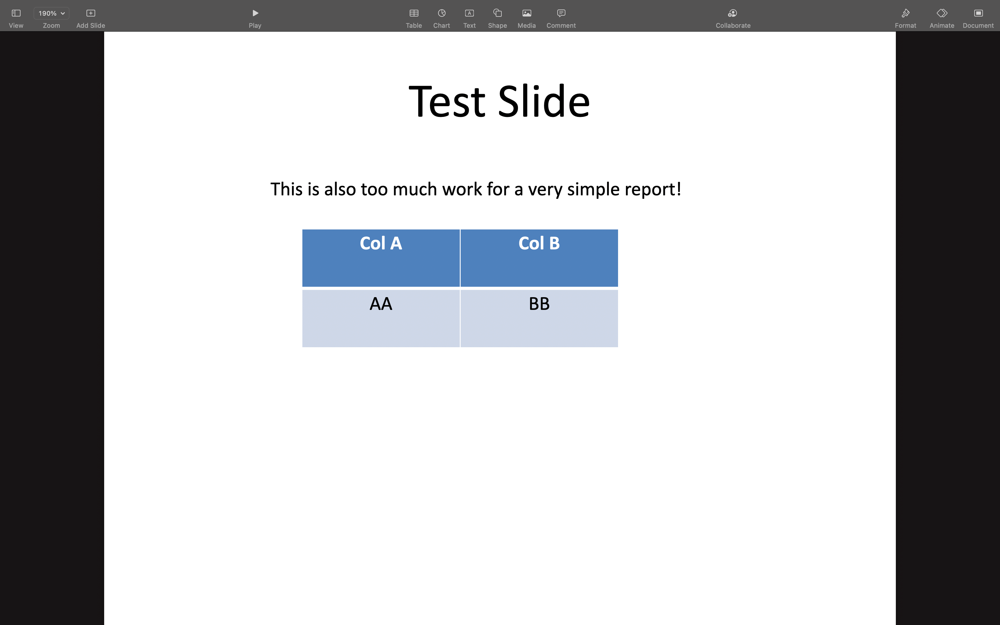
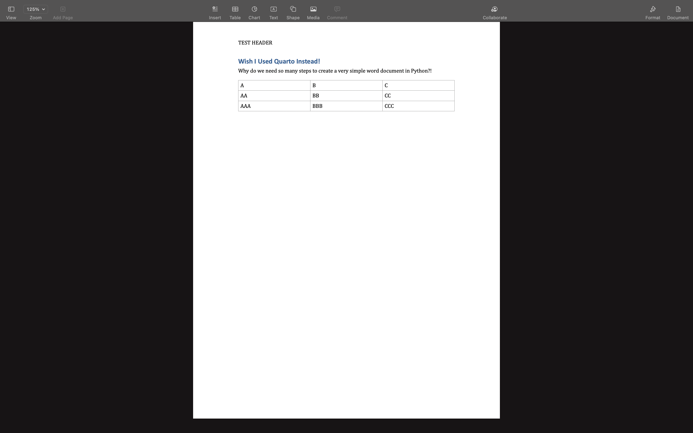
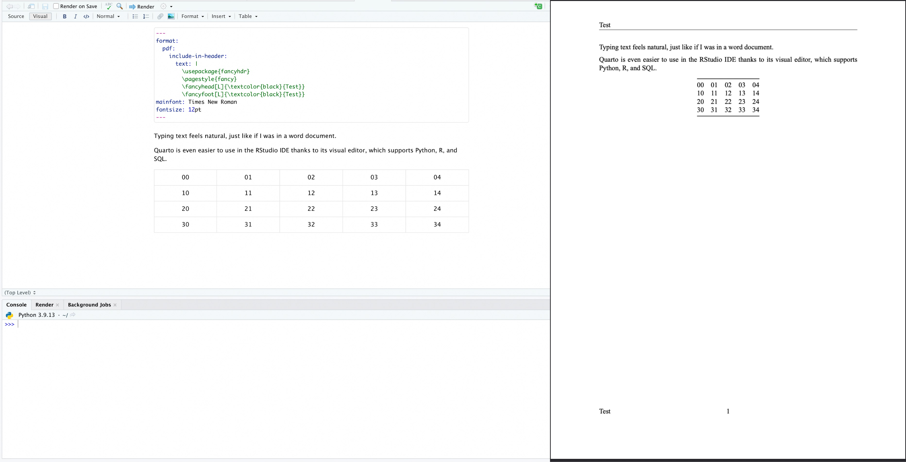
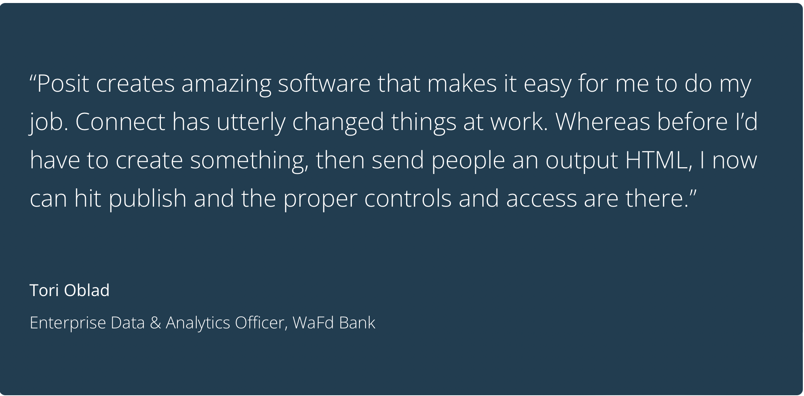

Reporting is a necessity of professional life. PowerPoint, PDF, and Word are the standard document formats used to relay information to decision-makers. Many of us have placed our analysis in a report, cycled through multiple iterations, and finally sent it off to stakeholders, only to be asked to make additional changes or refresh the analysis months later. This typical reporting cycle can be tedious, causing many to use Python for report automation.
While Python is a popular choice for report automation, there may be better options. For this reason, we will explore how Quarto improves report automation and, when combined with Posit Connect, can result in automatically refreshed end-to-end reporting workflows. Using Quarto and Posit Connect, less time will be spent reporting leaving more time available to do the exciting work!
Reporting with code is cumbersome
Automating reports using Python is often cumbersome, time-consuming, and challenging to maintain. This statement is especially true for complex, lengthy, or highly custom reports for a few reasons:
Too much code: Nearly every report’s details must be defined, causing simple tasks to require a lot of code resulting in lengthy codebases and rigid processes.
Different formats need different packages: PDF, Word, and PowerPoint are all generated using different packages. Rendering a single report to multiple formats requires disparate codebases.
Finding Object Coordinates: Several Python packages require objects to be precisely placed within the document. Finding the table number of page coordinates is a hassle.
Iterations are slow: Making changes and seeing the output requires the entire code base to be re-executed.
Time to create some simple reports to demonstrate what creating reports using Python entails. As you go through them, consider how they would scale with a full report containing content and custom formatting - hundreds of lines of code could be necessary, even if report templates are used.
PDF Code
from reportlab.lib.pagesizes import letter
from reportlab.pdfgen import canvas
from reportlab.lib.styles import getSampleStyleSheet, ParagraphStyle
from reportlab.lib.units import cm
from reportlab.platypus import SimpleDocTemplate, PageTemplate, Table, TableStyle, Flowable, Spacer
from reportlab.platypus.frames import Frame
from reportlab.lib import pagesizes, colors
from reportlab.platypus.paragraph import Paragraph
from functools import partial
from reportlab.lib.units import inch
from reportlab.lib.enums import TA_JUSTIFY
# Create Header and Footer - example based on stackoverflow answer
def header(canvas, doc, content):
canvas.saveState()
w, h = content.wrap(doc.width, doc.topMargin)
content.drawOn(canvas, doc.leftMargin, doc.height + doc.bottomMargin + doc.topMargin - h)
canvas.restoreState()
def footer(canvas, doc, content):
canvas.saveState()
w, h = content.wrap(doc.width, doc.bottomMargin)
content.drawOn(canvas, doc.leftMargin, h)
canvas.restoreState()
def header_and_footer(canvas, doc, header_content, footer_content):
header(canvas, doc, header_content)
footer(canvas, doc, footer_content)
doc = SimpleDocTemplate("test.pdf",pagesize=letter,
rightMargin=72,leftMargin=72,
topMargin=72,bottomMargin=18)
header_text = Paragraph("TEST HEADER", styles['Normal'])
footer_text = Paragraph("TEST FOOTER", styles['Normal'])
head_foot_template = PageTemplate(id='test', frames=frame, onPage=partial(header_and_footer, header_content=header_text, footer_content=footer_text))
pdf.addPageTemplates([head_foot_template])
# Create Page One Content
pg1=[]
styles=getSampleStyleSheet()
styles.add(ParagraphStyle(name='Justify', alignment=TA_JUSTIFY))
pg1.append(Paragraph('This is not as easy as it should be!', styles["Normal"]))
pg1.append(Spacer(1, 10))
pg1.append(Paragraph("Seriously, this is too much code to do something very simple...and we'll need more to do more", styles["Normal"]))
pg1.append(Spacer(1, 10))
# Create Table on Page 1 - example based on stackoverflow answer
tbl_data = [['00', '01', '02', '03', '04'],
['10', '11', '12', '13', '14'],
['20', '21', '22', '23', '24'],
['30', '31', '32', '33', '34']]
tbl = Table(tbl_data,5*[0.4*inch], 4*[0.4*inch])
tbl.setStyle(TableStyle([('ALIGN',(1,1),(-2,-2),'CENTER'),
('TEXTCOLOR',(1,1),(-2,-2),colors.black),
('VALIGN',(0,0),(0,-1),'TOP'),
('TEXTCOLOR',(0,0),(0,-1),colors.black),
('ALIGN',(0,-1),(-1,-1),'CENTER'),
('VALIGN',(0,-1),(-1,-1),'CENTER'),
('TEXTCOLOR',(0,-1),(-1,-1),colors.black),
('INNERGRID', (0,0), (-1,-1), 0.25, colors.black),
('BOX', (0,0), (-1,-1), 0.25, colors.black),
]))
pg1.append(t)
# write the document to disk
pdf.build(pg1)
PowerPoint Code
from pptx import Presentation
from pptx.enum.shapes import MSO_SHAPE
from pptx.util import Inches
from pptx.enum.text import PP_ALIGN
prs = Presentation()
# Create first slide
slide1_layout = prs.slide_layouts[5]
slide1 = prs.slides.add_slide(slide1_layout)
slide1.shapes.title.text = "Test Slide"
# Add text
textbox = slide1.shapes.add_textbox(Inches(2), Inches(1.5),Inches(6), Inches(1))
textframe = textbox.text_frame
paragraph = textframe.add_paragraph()
paragraph.text = "This is also too much work for a very simple report!"
# Add Table
x, y, cx, cy = Inches(2.5), Inches(2.5), Inches(2), Inches(1.5)
shape = slide1.shapes.add_table(2, 2 , x, y, cx, cy)
table = shape.table
# set column widths
table.columns[0].width = Inches(2.0)
table.columns[1].width = Inches(2.0)
# write column headings
table.cell(0, 0).text = 'Col A'
table.cell(0, 1).text = 'Col B'
# write body cells
table.cell(1, 0).text = 'AA'
table.cell(1, 1).text = 'BB'
# Center align table cells
for row in table.rows:
for cell in row.cells:
for paragraph in cell.text_frame.paragraphs:
paragraph.alignment = PP_ALIGN.CENTER
prs.save('test.pptx')

Word Code
from docx import Document
from docx.shared import Inches
doc = Document()
# Create Header
section = doc.sections[0]
header = section.header
paragraph = header.paragraphs[0]
paragraph.text = 'TEST HEADER'
# Create Footer
section = doc.sections[0]
footer = section.footer
paragraph = footer.paragraphs[0]
paragraph.text = 'TEST FOOTER'
# Create First Page
doc.add_heading('Wish I Used Quarto Instead!')
paragraph = doc.add_paragraph('Why do we need so many steps to create a very simple word document in Python?!')
# Add a Table
table = doc.add_table(3,3)
table.style = 'Table Grid'
row_1 = table.rows[0]
row_1.cells[0].text = 'A'
row_1.cells[1].text = 'B'
row_1.cells[2].text = 'C'
row_2 = table.rows[1]
row_2.cells[0].text = 'AA'
row_2.cells[1].text = 'BB'
row_2.cells[2].text = 'CC'
row_3 = table.rows[2]
row_3.cells[0].text = 'AAA'
row_3.cells[1].text = 'BBB'
row_3.cells[2].text = 'CCC'
doc.save('test.docx')

Automating reports should be straightforward and not require a substantial amount of time. These examples have shown that this is not the case when using Python. That is not to say that these tools never have a place, but more often than not, they are not an ideal choice for report automation.
Quarto to the rescue
Ideally, the following would be achievable when automating reports:
Add text, tables, images, figures, code, and charts in a consistent and simple manner
Place objects within a grid system
Execute code in individual cells within the IDE to preview code output
Render to different document formats without creating disparate codebases
Iterate through reports efficiently instead of re-executing the entire codebase
Easily embed citations and cross-references
Be able to reference and reuse content across reports
Use with multiple IDEs
With Quarto, we can have all of these things!
Quarto is a publishing system that allows text and code to be seamlessly weaved together in a functional and easy-to-use package with many quality-of-life features. Quarto functions similarly to a Jupyter Notebook with added benefits such as saving to plain text, outputting to various formats, native layout options, and much more. Quarto can even render Jupyter Notebooks for those of you who are ride-or-die Jupyter!
Quarto is a powerful tool for automating reports because it eliminates the need for code to be used in creating and structuring the report. Instead, it uses code in its proper place to generate output like dynamic tables and charts. Quarto can render reports in PDF, HTML, PowerPoint, Word, or ePub format while effortlessly integrating with Python and other languages. Let’s take a quick look at how Quarto can be used to automate our reporting!
The ease of using Quarto
Creating the same simple pdf from our earlier example requires no code in Quarto. We can add a table using the visual editor (only available in RStudio - which fully supports Python). Even without the IDE’s visual editor, we can use a markdown table, which can be generated from various websites or hand-typed utilizing a series of | and - for columns and rows.

Quarto in RStudio
For more dynamic tables and charts, we can embed a code chunk and programmatically generate the output to embed in our document. The code or code output can be integrated into our document and formatted using many native Quarto options.
Quarto 101
Every Quarto document starts with a YAML header, where document-level options can be defined. For example, adding header and footer-linked images to each page would look like this:
format: pdfmainfont: Times New Romanfontsize: 12ptmargin-header:|margin-footer:|
After setting up the report options, the report’s body is created using a combination of text, code, and whatever else is required. The example below shows text typed into the IDE and a code-generated chart. We can preview the chart before rendering the document by running the code cell - as we would in a Jupyter Notebook. Quarto special comments (#|) are used within the code cell to place the image and assign a caption.
Quarto in VS Code
Quarto comes built-in with special comments(#|), short-code ({{ }}), extensions, and pre-defined attributes that make report customization quick and easy. We won’t cover all of these incredible features in detail, but let’s take a quick look at the example below to see how we can use attributes to determine the size, layout, and spacing of several images. We can organize these images exactly how we like with one line of quasi-code.
After finalizing our report, we may need to output it to multiple formats, which is done by changing the YAML header. For example, if we had a PDF with the following YAML header and wanted to change the format to word. We would go from this:
format: pdfmainfont: Times New Romanfontsize: 12pt
to this:
format: docxmainfont: Times New Romanfontsize: 12pt
After changing the YAML header, we can re-render the document and get our report in the newly defined format. A single Quarto file can automate a report output to one or multiple file formats. Quarto makes report automation both easy and efficient!
There is even more to Quarto
Quarto has many other awesome features we did not cover in detail, such as:
Multi-language support (Python, R, Julia, Observable JS)
Multiple IDE Support (VS Code, Jupyter Notebooks, RStudio)
Parameterized reports
Dynamic variables
Support for interactive components (Shiny for Python, Plotly)
Extensions
Git compatibility
and much more!
Be sure to explore the Quarto website to learn more and see fully developed report examples. Quarto makes reporting in Python easy. Don’t just take my word for it:
Sharing with Posit Connect
After automating a report, the next step is to execute and share it. Using Posit Connect, Quarto reports and other data products (applications, dashboards, datasets, APIs, etc.) can be shared and refreshed on a schedule, conditionally, or on demand. Data products can be published manually through IDE push-button publishing, the command line, Git-backed publishing, or API-backed publishing.

Posit Connect can deploy:
Quarto
Jupyter Notebooks
Shiny for Python
Streamlit
Dash
Tensorflow Model APIs
Vetiver
Bokeh
Flask
Plumber
FastAPI
Pins
Tableau Analytics Extensions
Posit Connect changes the way you work for the better
Imagine using Quarto to automate that manual daily report cobbled together using SQL and Excel and then deploying it to connect where it auto-executes and sends out each day at a set time, notifying you if there is a problem.
…Or consider what it would be like not to stress when your managing director asks you to refresh that analysis you did six months ago by the end of the day because you can refresh and deploy at the push of a button.
…How about living in a world where you can build and deploy a simple web app allowing your stakeholders to upload a spreadsheet with IDs and get the data they need without bothering you?
Posit Connect can make all of this possible and so much more. It eases many of the burdens associated with professional life. Take a look at what current clients say about it and see why many of the world’s largest organizations trust Posit Connect and other Posit enterprise tools.
Overview of Posit Connect found
For more information or to request a demo visit the Posit homepage.